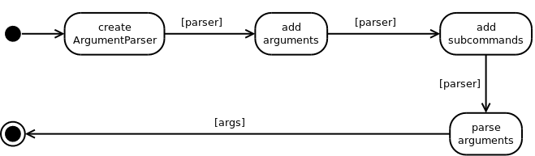
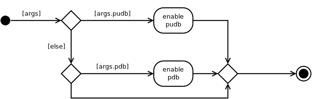

This is the main entrance point for running this (RVR) code without an external code-runner.
parse_args |
class ArgumentConstants(object):
"""
Constants (primarily used to keep the tests in sync)
"""
__slots__ = ()
version = '2014.12.19'
# defaults
default_configuration = 'rvr_configuration.ini'
default_path = 'rate_vs_range'
The parse_arguments function creates an ArgumentParser, adds the arguments and sub-commands and parses the command line (or arguments list if it was passed in as an argument).
Checks the args namespace to see if the user asked for an interactive debugger and enables it (if possible).
These are functions that the sub-parsers use to chose the path to follow at run-time based on the user’s command-line arguments. The get_examples was created so that other code can get them. .. ‘
get_examples() |
gets the example strings from the configurations |
fetch_configuration(args) |
gets the default configuration and dumps it to the screen |
run_configuration(args) |
Runs the AutomatedRVR.Test |
The main entry point to run the rate-vs-range code:
- Get args namespace from
parse_args- If args.pudb or args.pdb, enable debugging
- Set the logger
- Call the subcommand